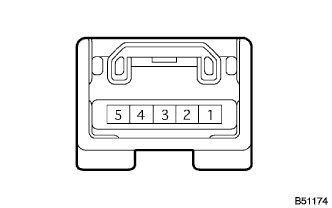

ワイヤレスドアロツクコントロールシステム ＥＣＵ端子配列 |
インストルメントパネルジヤンクシヨンブロツクASSYのコネクタB、EおよびGを切り離す。
SST(トヨタエレクトリカルテスター)を使用して、車両側コネクタ各端子間およびボデーアース間の電圧、抵抗および導通を点検する。
| 端子番号 | 項目 | 測定条件 | 基準 |
|---|---|---|---|
| G1(+B)←→ボデーアース | 電圧 | 常時 | 10-14V |
| B30(+ECUB)←→ボデーアース | 電圧 | 常時 | 10-14V |
| E26(KSW)←→ボデーアース | 導通 | イグニツシヨンスイツチロツクシリンダにキーなし→あり | 導通なし→あり |
| F4(IG)←→ボデーアース | 電圧 | イグニツシヨンスイツチON | 10-14V |
コネクタを接続し、コネクタの各端子の電圧を点検する。
| 端子番号 | 項目 | 測定条件 | 基準 |
|---|---|---|---|
| E26(KSW)←→ボデーアース | 電圧 | イグニツシヨンスイツチロツクシリンダにキーなし→あり | 10-14V→0V |
| A21(DCTY)←→ボデーアース | 電圧 | 運転席ドア全閉→開 | 10-14V→0V |
| C14(PCTY)←→ボデーアース | 電圧 | スライドドア全閉→開 | 10-14V→0V |
| T7(RDA)←→ボデーアース | 電圧 | イグニツシヨンスイツチOFF、キーなし 全ドア閉でトランスミツタのスイツチOFF→ON | 1V以下→6V→1V以下 |
| S17(HAZ)←→ボデーアース | 電圧 | イグニツシヨンスイツチOFF、キーなし 全ドア閉でトランスミツタのスイツチOFF→ON (アンサーバック時) | 10-14V→0V→10-14V |
|  |
コネクタを切り離し、SST(トヨタエレクトリカルテスター)を使用して、車両側ワイヤハーネスのコネクタ各端子間の電圧および導通を点検する。
| 端子番号(端子名) | 項目 | 測定条件 | 基準 |
|---|---|---|---|
| 1(E)←→ボデーアース | 導通 | 常時 | 導通あり |
| 5(+B)←→1(E) | 電圧 | 常時 | 10-14V |
コネクタを接続した状態で各端子間の電圧を点検する。
| 端子番号(端子名) | 項目 | 測定条件 | 基準 |
|---|---|---|---|
| 2(RDA)←→1(E) | 電圧 | イグニツシヨンスイツチ OFF、キーなし、全ドア閉、トランスミツタのスイツチOFF→ON | 10-14V→10V以下→10-14V |
スマートキーコンピユータASSYのコネクタを切り離す。
SST(トヨタエレクトリカルテスター)を使用して、車両側コネクタ各端子の電圧および導通を点検する。
| 端子番号(端子名) | 項目 | 測定条件 | 基準 |
|---|---|---|---|
| 1(+B)←→20(GND) | 電圧 | 常時 | 10-14V |
| 5(KSW)←→20(GND) | 導通 | イグニツシヨンスイツチロックシリンダにキーなし→あり | 導通なし→あり |
| 10(LSWD)←→20(GND) | 導通 | 運転席ドアロックノブ LOCK→UNLOCK | 導通なし→あり |
| 21(IG)←→20(GND) | 電圧 | イグニツシヨンスイツチ OFF→ON | 0V→10-14V |
| 31(ACTY)←→20(GND) | 導通 | 全ドア閉→いずれかのドア開 | 導通なし→あり |
| 20(GND)←→ボデーアース | 導通 | 常時 | 導通あり |
コネクタを接続、各コネクタ端子間の電圧を点検する。
| 端子番号(端子名) | 項目 | 測定条件 | 基準 |
|---|---|---|---|
| 14(RSSI)←→20(GND) | 電圧 | イグニツシヨンスイツチ OFF、キーなし、全ドア閉、エレクトリカルキートランスミツタ(スマート携帯機)のスイツチOFF→ON | 10-14V→0V |
| 16(RCO)←→20(GND) | 電圧 | イグニツシヨンスイツチ OFF、キーなし、全ドア閉、エレクトリカルキートランスミツタ(スマート携帯機)のスイツチOFF→ON | 5-0V→5V |
| 17(CLG1)←→20(GND) | HZ
| 車外からエレクトリカルキートランスミツタ(スマート携帯機)により全ドア閉(LOCK状態)、キーなし→あり | HZ出力あり→なし |
| 26(SEL1)←→20(GND) | 電圧 | エレクトリカルキートランスミツタ(スマート携帯機)を運転席ドアから5ｍ以上離す→フロントドアアウトサイドハンドルASSY RH付近に近付ける | 10-14V→0V |
| 32(RDA3)←→20(GND) | 電圧 | イグニツシヨンスイツチ OFF、キーなし、全ドア閉、エレクトリカルキートランスミツタ(スマート携帯機)のスイツチOFF→ON | 1V以下→約6V→1V以下 |
コネクタを切り離し、SST(トヨタエレクトリカルテスター)を使用して、車両側ワイヤハーネスのコネクタ各端子間の導通を点検する。
| 端子番号(端子名) | 項目 | 測定条件 | 基準 |
|---|---|---|---|
| 2(GND)←→ボデーアース | 導通 | 常時 | 導通あり |
コネクタを接続した状態で各端子間の電圧を点検する。
| 端子番号(端子名) | 項目 | 測定条件 | 基準 |
|---|---|---|---|
| 3(RSSI)←→2(GND) | 電圧 | イグニツシヨンスイツチ OFF、キーなし、全ドア閉、エレクトリカルキートランスミツタ(スマート携帯機)のスイツチOFF→ON | 10-14V→0V |
| 5(RCO)←→2(GND) | 電圧 | イグニツシヨンスイツチ OFF、キーなし、全ドア閉、エレクトリカルキートランスミツタ(スマート携帯機)のスイツチOFF→ON | 5-0V→5V |
| 4(DATA)←→2(GND) | 電圧 | イグニツシヨンスイツチ OFF、キーなし、全ドア閉、エレクトリカルキートランスミツタ(スマート携帯機)のスイツチON、エレクトリカルキートランスミツタ(スマート携帯機)を持って運転席ドアから5ｍ離れる→フロントドアアウトサイドハンドルASSY RH付近に近付ける | 0V→10-14V→0V |